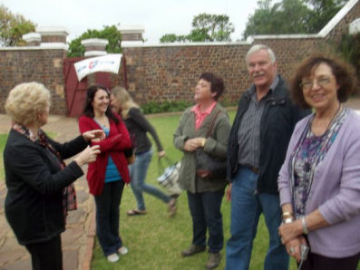
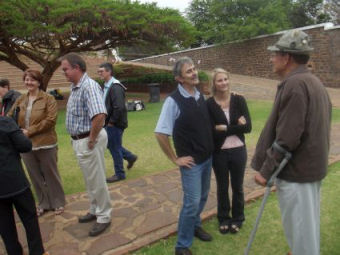
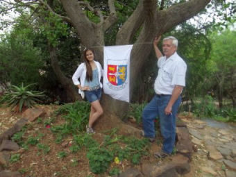
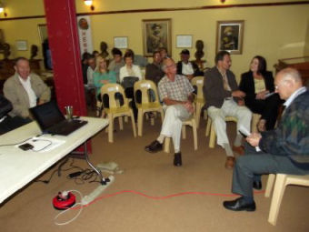
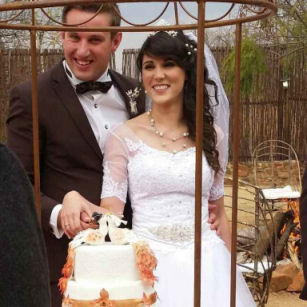
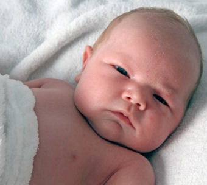
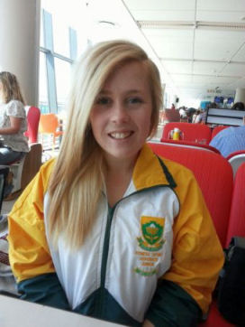
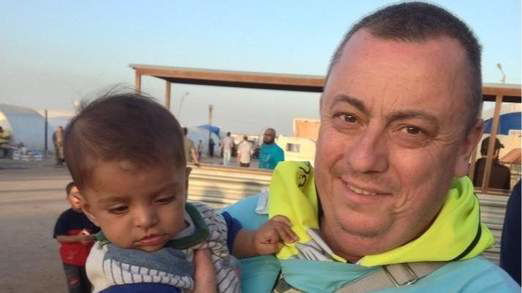

|

Feesgangers arriveer. Hennings al die pad van Tzaneen en Paarl.
|

Feesgangers arriveer. Plaaslike feesgangers
|

Marthinus Henning en sy dogter Esmari van Welkom by een van die Henning vlae op die terrein
| ||||||||||||||||
|

Die vier sleutel figure met die opening van die fees wag dat al die feesgangers die saal binnekom. V.l.n.r Hennie Coetzee, bestuurder van Fasiliteite by die Monument, Olivier Henning, Bondsekretaris, Sonja Lombard HUB Erfenisstigting en Gideon Henning, Voorsitter van die Familiebond.
Nog foto's van die fees verskyn aan die einde
SterftesDit is met hartseer dat ons verneem het van die afsterwe van die volgende Hennings:
b1.c6.d1.e2.f2.g5. Coenraad Hermanus Henning *28-7-1931 of Boetie, soos almal hom geken het, is op 19 Junie 2014 te Brakpan oorlede. Sy moeder sterf met sy geboorte, gevolglik word hy grootgemaak deur 'n kinderlose egpaar, Carstens wat te Brakpan gewoon het.Hy het sy hele loopbaan by die Kamer van Mynwese gewerk en het 25 jaar gelede afgetree. Hy was baie aktief by kerksake betrokke en was 33 jaar lank sekretaris van die AGS Brakpan gemeente. Hy is dan ook uit die AGS gemeente Brakpan begrawe. Hy was baie lief vir sport en rondreis. b7.c8.d8.e1.f1. Johanna Delport (gebore Henning) *30-6-1929 van Brenthurst, Brakpan is op 26 Julie 2014 oorlede in die ouderdom van 85 jaar. Sy was 'n weduwee sedert 1988, toe haar man, Danie Delport haar ontval het. Johanna en haar man het sedert 1968 in Brakpan gebly. Hulle het vyf kinders (drie dogters en twee seuns), asook 10 kleinkinders en sewe agter kleinkinders. b1.c6.d14.e2.f3. Arthur Smith Henning *14-2-1937 van die plaas Sweetwaters, Louis Trichardt is op 21 Julie 2014 in 'n hospitaal te Pretoria oorlede.
Huwelike

Estie Van Straaten *27-9-1990, dogter van Simon Sauer van Straaten en b7.c8.d8.e5.f5. Rubina Theunissa (Runa) van Straaten (gebore Henning) is op 9 Augustus 2014 te Casa & Lee, Boschkop getroud met Menanteau Serfontein.
GeldsakeDie groot familiefees het 'n redelike groot hap uit die finansiële bronne van die familiebond gemaak. Die huur van die fasiliteite, vervaardiging van baniere, reklame en ander uitgawes het ongeveer R12 374.00 beloop. Gelukkig het ons talle lojale lede wat verseker het dat ons die fees op 'n positiewe finansiële noot kon afsluit. Ons het oor die afgelope drie maande donasies van die volgende lede ontvang: Pieter Hendrik (Tappies) Henning van Benoni — R5 000.00 Met die einde van die jaar in sig, is daar nog 24 lede wat geen bydrae vir 2014 gelewer het nie, en ons doen al weer 'n beroep op ons lede om vir 2015 'n bydrae te maak. Lede kan gerus oorweeg om deur middel van 'n klein maandelikse debietorder van so min as R20.00 tot R30.00 per maand by te dra. U voel so 'n bedraggie nie eens nie, maar vir die familiebond is dit van groot waarde. U het ook volle beheer oor die transaksie, want u reël dit self met u bank. Andersins is 'n eenmalige jaarlikse bydrae van watter bedrag ookal ook baie welkom. Die familiebond sal juis vroeg in die nuwe jaar 'n nuwe fotostaatmasjien/drukker moet aanskaf, omdat inkpoeierkassette vir die huidige masjien nie meer beskikbaar is nie Die bankbesonderhede is as volg: ABSA Bank Villiersdorp (tak no 334-612), Rekeningnaam — Henning Familiebond, Rekening no — 2890 610 423
'n Nuwe Baba

b1.c1.d10.e2.f1.g1. Johannes Carel Henning van Verwoerdpark, Alberton het vir ons laat weet dat sy dogter, Vicky-Lodine Du Toit en haar man Riaan Stefan Du Toit op 10 Januarie 2013 ouers geword het van 'n regte bulletjie, met die naam Luan Du Toit. Luan is hulle tweede kind.
Lenélle Henning verteenwoordig Suid-Afrika

Lenélle Henning (16) dogter van b7.c8.d8.e3.f4.g2. Leonard – en Chantélle Henning van Van Riebeeckshof, Bellville was gedurende 2014 in Graad 10 (ou St 8) in die Hoërskool DF Malan in Bellville. Die afgelope paar jaar het sy Aerobiese fiksheidsport (Hip-Hop) begin beoefen. Tydens die Suid-Afrikaanse kampioenskappe in Augustus 2014 is sy saam met die res van haar span verkies om Suid-Afrika tydens die Wêreldkampioenskappe wat teen die einde van Oktober 2014 in Praag, Tjeggiese Republiek gehou word, te gaan verteenwoordig in die Junior afdeling. Ons sal dus in die volgende nuusbrief daaroor rapporteer. Baie geluk aan Lenélle met hierdie prestasie. Ons is baie trots op haar.
'n Henning onthoof in Sirië

Die Britse burger, Alan Henning wat onlangs in Sirië deur die terroristegroep, "Islamietiese Staat" onthoof is, ten spyte van die feit dat hy vrywillige noodleniging in Sirië gedoen het
Gedurende September 2014 het dit bekend geword dat 'n Alan Henning deur die terroristegroep, die Islamietiese Staat in Sirië onthoof is. Ons kon geen verbintenis vind tussen hierdie Alan Henning en enige van die Henning stamme in Suid-Afrika nie. Hy word wel beskryf as 'n Britse onderdaan wat as 'n vrywilliger gereeld na Sirië gereis het om mediese hulp te verleen aan die plaaslike bevolking.
Henning Aandenkings vir KersfeesDaar is nog steeds verskeie Henning aandenkings te koop, wat pragtige Kersgeskenke uitmaak. Met die posstaking wat hopelik eerdaags verby sal wees, bestel gerus vroegtydig telefonies (028 840 0113) of per E-Pos (olie4@henning.org) om seker te maak hoeveel die posgeld sal bedra. Pryse is as volg: 1. Teelepels — R50.00 elk. Pragtig as 'n stel van ses of meer, saam met 'n suikerlepel2. Suikerlepels — R54.00 elk 3. Lapelwapens — R30.00 elk 4. Mansjetknope — R100.00 stel. Ten spyte van die feit dat baie mans nie meer mansjetknope dra nie, meld ons graag dat ons Henning mansjetknope werklik pragtig is en met trots gedra of in 'n vertoonkas vertoon kan word 5. Skryfblokke (50 bladsye) — R30.00 6. Henning CD — R125.00 elk 7. Henning Familiekroniek — twee volumes — R450.00 (Slegs 8 stelle beskikbaar) Ongelukkig sal ons posgeld moet byvoeg, wat eers bepaal kan word wanneer 'n bestelling geplaas word. Ons wil dus aanbeveel dat u eers telefonies of per E-Pos navraag doen voordat u geld in die Familiebond se rekening inbetaal. Ons kontakbesonderhede verskyn ook op die voorblad. Die Familiebond bankrekening besonderhede is as volg: ABSA Bank Villiersdorp (tak 334 612), Rekeningnaam — Henning Familiebond, Rekening no — 2890 610 423
Nog Henning fees foto's
Bo: Mev Sonja Lombard, HUB van die Erfenisstigting verwelkom die Hennings by die Voortrekkermonument. Middel: Gideon Henning, Voorsitter van die Familiebond verwelkom al die feesgangers. Foto's bo regs en onder links: Feesgangers luister aandagtig na die toesprake en skyfievertoning
Bo: Olivier Henning besig met 'n skyfievertoning oor die Henning stamvader, Pieter Hendrik Henning. Op die ander foto's kuier feesgangers lekker saam en braai 'n vleisie op die kole Weens die posstaking sal baie lede hierdie Nuusbrief laat ontvang. 'n Geseënde Kersfees en Voorspoedige Nuwe Jaar word almal toegewens. | ||||||||||||||||||